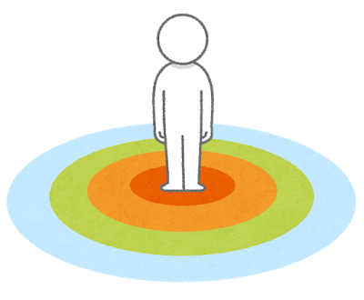
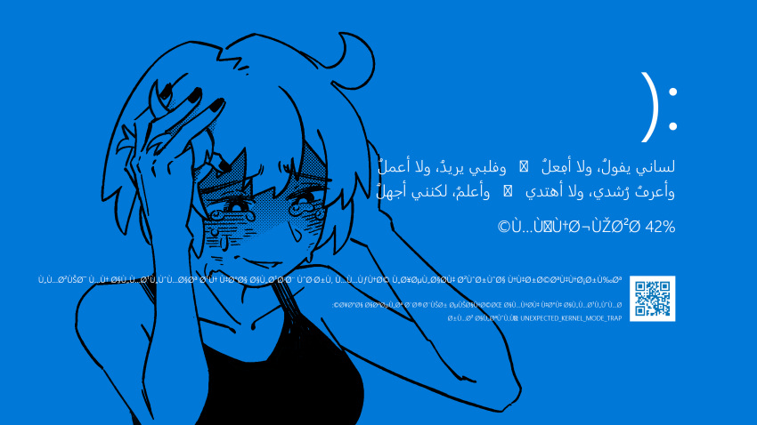

Tự học Tiếng Ả Rập¶
1.1 Giới thiệu¶
Học tiếng Ả Rập để xem phim, nói chuyện với người bản xứ, hay đọc báo chí và tiểu thuyết đều đòi hỏi những kỹ năng nền tảng giống nhau. Hướng dẫn (lộ trình) tự học Tiếng Ả Rập thông qua Comprehensible Input (Nội dung dễ hiểu) và Immersion, hoàn toàn miễn phí này được viết để giúp bạn tự xây dựng nền tảng và học lên cao hơn.
Bạn sẽ cần thời gian. Rất nhiều thời gian (Đừng tin mấy cái chỗ trung tâm ;-;). Bạn cần xây dựng thói quen tiếp xúc thường xuyên với ngôn ngữ, đó là cách duy nhất để tiến bộ thật sự. Có nhiều ước tính ngoài kia về tổng số giờ cần để học một ngôn ngữ. Nếu bạn dành nhiều thời gian hơn mỗi ngày, bạn sẽ tiến bộ nhanh hơn -- đơn giản vậy thôi.
Bạn nên (cần) đọc Hướng dẫn tự học ngoại ngữ đầy đủ này để hiểu về phương pháp học ngoại ngữ được trình bày trong trang này.
1.2 Tư duy về việc học ngoại ngữ¶
Việc tiếp xúc và “tiêu thụ” ngôn ngữ chính là cách bạn học ngôn ngữ đó. Hãy nghĩ đến trẻ sơ sinh: ban đầu các bé chỉ biết khóc và… tè dầm, nhưng chỉ sau vài năm đầu đời, các bé đã có thể nói được ngôn ngữ mẹ đẻ. Trẻ em nhanh chóng tiếp thu những quy tắc ngữ pháp phức tạp và sớm nói chuyện với ngữ pháp khá chính xác cùng phát âm gần như hoàn hảo. Điều này xảy ra vì các bé liên tục lắng nghe những người xung quanh, đặc biệt là cha mẹ, và dần dần hiểu được ý nghĩa của những gì được nói. Bộ não của chúng ta vốn được “lập trình” để làm điều đó một cách tự nhiên.
Những người học ngôn ngữ theo cách truyền thống thường cho rằng khi lớn lên, phần não chịu trách nhiệm tiếp thu ngôn ngữ sẽ “chết đi”, khiến chúng ta không còn khả năng học ngôn ngữ như trẻ em nữa. Vì vậy, họ tin rằng người lớn buộc phải học ngôn ngữ giống như học toán hay khoa học: dùng tư duy lý trí, logic, ghi nhớ có ý thức các quy tắc và làm bài tập lặp đi lặp lại. Tuy nhiên, quan điểm này đã được chứng minh là không đúng.
Theo Stephen Krashen, con người tiếp thu ngôn ngữ khi họ hiểu được thông điệp. Ông gọi quá trình này là “comprehensible input” (đầu vào có thể hiểu được). Quá trình tiếp thu ngôn ngữ thứ hai về bản chất rất giống với cách trẻ em học tiếng mẹ đẻ. Bạn hoàn toàn có thể làm được điều này, bất kể bạn bao nhiêu tuổi.
Chúng ta không còn là em bé, nhưng chúng ta thông minh hơn và có thể học nhanh hơn. Với sự hỗ trợ của công nghệ, bất kỳ người lớn nào cũng có thể tiếp thu một ngôn ngữ thông qua input, bằng cách immersion vào ngôn ngữ đó. Việc “tiếp thu” ngôn ngữ không thể được thay thế hoàn toàn bằng việc học ngôn ngữ theo nghĩa truyền thống, như đi học lớp hay mua sách giáo trình. Immersion là yếu tố quan trọng nhất trong toàn bộ quá trình này.
1.3 Quy mô của ngôn ngữ¶

Ngôn ngữ là một hệ thống có quy mô rất rộng lớn, vượt xa những gì có thể được bao quát trong trường học, giáo trình hay các khóa học bài bản. Không có danh sách từ vựng “đầy đủ”, không có bộ ngữ pháp nào mô tả trọn vẹn mọi cách con người thực sự sử dụng ngôn ngữ trong đời sống. Ngôn ngữ tồn tại trong vô số ngữ cảnh: hội thoại đời thường, tin tức, phim ảnh, văn học, mạng xã hội, tiếng lóng, ẩn dụ, giọng điệu, cảm xúc, và cả những thứ không bao giờ xuất hiện trong sách giáo khoa.
Môi trường học ở trường thường thu nhỏ ngôn ngữ thành những phần có thể kiểm soát được: bài học, cấu trúc, điểm số. Điều này tạo cảm giác rằng ngôn ngữ là thứ gì đó “có thể học xong”, “có thể nắm trọn”, hoặc ít nhất là có một vạch đích rõ ràng. Trên thực tế, ngay cả người bản xứ cũng không bao giờ “biết hết” ngôn ngữ của chính họ. Họ chỉ ngày càng quen thuộc hơn với nhiều ngữ cảnh hơn.
Immersion thừa nhận quy mô thực sự đó. Thay vì cố gắng làm chủ toàn bộ ngôn ngữ trong một không gian an toàn và giới hạn, người học bước thẳng vào ngôn ngữ như nó vốn là: lớn, phức tạp, đôi khi hỗn loạn. Bạn không học để “xong chương trình”, mà học để sống cùng ngôn ngữ trong thời gian dài. Vì vậy, immersion không tìm cách thu nhỏ ngôn ngữ cho vừa với người học, mà buộc người học mở rộng dần khả năng tiếp nhận của mình.
1.4 Chấp nhận sự mù mờ, khó hiểu (low comprehension)¶

Một trong những rào cản tâm lý lớn nhất khi học ngoại ngữ theo immersion là việc phải chấp nhận không hiểu. Trong môi trường trường lớp, sự rõ ràng và chính xác được đề cao: hiểu bài, làm đúng, trả lời trọn vẹn. Không hiểu thường bị xem là thất bại, là dấu hiệu của việc “chưa học đủ”.
Immersion đi theo hướng ngược lại. Nó đòi hỏi người học phải hài lòng với sự mơ hồ, với việc chỉ hiểu được một phần nhỏ nội dung, thậm chí đôi lúc gần như không hiểu gì. Điều này không phải là sai sót của phương pháp, mà là trạng thái bình thường của việc tiếp xúc với ngôn ngữ thật, đặc biệt ở giai đoạn đầu.
Khi bạn xem phim, nghe podcast hay đọc văn bản do người bản xứ tạo ra, bạn sẽ bỏ lỡ rất nhiều thứ: từ vựng, chi tiết, sắc thái. Nhưng não bộ không cần bạn hiểu 100% để học. Nó học thông qua việc tiếp xúc lặp đi lặp lại, nhận ra mẫu, âm thanh, ngữ cảnh, và dần dần tự điều chỉnh. Sự hiểu biết không đến dưới dạng “à, mình đã hiểu xong”, mà tích lũy âm thầm qua thời gian.
Việc chấp nhận low comprehension cũng có nghĩa là từ bỏ nhu cầu kiểm soát tuyệt đối. Bạn không còn học theo kiểu “hôm nay mình học được bao nhiêu”, mà chuyển sang “hôm nay mình đã tiếp xúc với ngôn ngữ bao lâu”. Thay vì chờ đến khi “đủ giỏi” mới dùng nội dung thật, bạn dùng nội dung thật ngay cả khi chưa hiểu, và để sự hiểu xuất hiện sau.
Immersion không tôn vinh sự hoàn hảo. Nó tôn trọng quá trình. Càng sớm chấp nhận rằng không hiểu là một phần tất yếu và cần thiết, người học càng dễ tiến bộ và càng ít bị căng thẳng. Trong immersion, việc không hiểu không phải là dấu hiệu bạn đang làm sai, mà thường là dấu hiệu bạn đang làm đúng.
2.1 Hướng dẫn tự học Tiếng Ả Rập¶
Bảng chữ cái¶
Đầu tiên, bạn cần học từng chữ cái cơ bản. Bảng chữ cái Ả Rập có 28 chữ cái, tất cả đều đại diện cho các phụ âm và được viết từ phải sang trái. Mỗi chữ có 4 hình dạng khác nhau tùy vị trí (đầu, giữa, cuối, hoặc đứng riêng). Nghe có vẻ phức tạp, nhưng thật ra chỉ như cách chữ cái trong tiếng Latinh thay đổi viết hoa, viết thường.

Nhìn qua bảng chữ cái Tiếng Ả Rập phát
Bạn không cần học viết tay đẹp ngay. Thay vào đó, hãy tập nhận diện và đọc. Hãy chú ý đến nguyên âm ngắn (dấu tashkīl). Trong sách học hoặc truyện thiếu nhi, tashkīl sẽ giúp bạn đọc chính xác. Sau này, trong văn bản thật, dấu thường bị lược bỏ, nhưng nền tảng này giúp bạn đoán đúng cách phát âm.
Đây là một video học bảng chữ cái Tiếng Ả Rập mà bạn có thể xem:
Về cơ bản thì¶
Mình sẽ tập trung vào những nền tảng cơ bản của việc học Tiếng Ả Rập bằng cách:
- Học từ vựng thông dụng.
- Học những nguyên tắc cơ bản về cách ngôn ngữ hoạt động.
2.2 Từ vựng¶
Anki là một trong những ứng dụng ôn tập từ vựng mình yêu thích nhất. Đây là app flashcard cho phép bạn dùng bộ thẻ có sẵn hoặc tự tạo của riêng mình! (Bấm vào đây để tìm hiểu thêm về Anki và cách sử dụng).

Mình sẽ dùng Arap1000 trên Anki để học 1.000 từ phổ biến nhất trong truyền thông Tiếng Ả Rập, rồi chuyển sang sentence mining (hay còn gọi là đào câu, đọc hướng dẫn về Sentence Mining để biết thêm chi tiết). Đây là kỹ thuật lấy từ và câu mới trực tiếp từ tài nguyên immersion bằng công cụ như ASBplayer (Bấm vào đây để xem hướng dẫn sentence mining bằng ASBplayer).
Một điều mà cá nhân mình gợi ý là dừng sentence mining sau 2-3.000 thẻ. Làm thẻ Anki rất dễ gây nghiện, và bạn có thể tạo đến 10.000 thẻ hoặc hơn. Nhưng thực tế, có quá nhiều thẻ như vậy không hữu ích. Bạn chỉ cần số lượng từ phổ biến thường gặp, thay vì nhồi nhét tất cả.
2.3 Ngữ pháp¶
Mục tiêu của giai đoạn ngữ pháp ban đầu không phải là “nắm vững”, mà là xây một khung nhận thức tối thiểu để khi tiếp xúc tiếng Ả Rập thật (nghe, đọc, xem), bạn nhận ra được cấu trúc và không bị choáng. Cá nhân mình gợi ý bài giảng Ngữ pháp 1 - Tiếng Ả Rập trên Youtube (vì đó là nguồn duy nhất mình tìm được), bạn chỉ cần xem lướt qua, tập trung hiểu ý chính của mỗi bài, không cần ghi chép (quá chi tiết) và không cần làm bài tập.
Trong quá trình học, ưu tiên nắm các trục lớn sau:
- Phân biệt danh từ – động từ – tiểu từ, và ý tưởng “căn gốc 3 chữ” của động từ.
- Hai kiểu câu cơ bản: câu danh từ và câu động từ.
- Giống (đực/cái), số (ít/nhiều), và sự hòa hợp cơ bản.
- Đại từ nhân xưng độc lập và đại từ gắn.
- Hiện tại – quá khứ ở mức nhận diện.
Hướng dẫn chỉ mang tính chất chuẩn bị để bạn bước vào quá trình Immersion (Sẽ được bàn thêm ở bên dưới). Cách để ghi nhớ được ngữ pháp nhanh và hiệu quả nhất là bạn xem/nghe/đọc chính người bản ngữ sử dụng trong ngữ cảnh hàng ngày.
2.4 Comprehensible Input (Nội dung dễ hiểu)¶
Đây là loại input mà bạn hiểu được phần lớn nội dung, dù vẫn có một vài từ hoặc cấu trúc bạn chưa biết. Nhờ ngữ cảnh, hình ảnh, hoặc kiến thức sẵn có, bạn vẫn đoán được ý chung của câu hoặc đoạn văn. Theo thời gian, não bộ sẽ tự động liên kết những "mảnh ghép còn thiếu" với ý nghĩa phù hợp --- mà không cần phải dịch từng từ.
Nói cách khác: bạn không cần hiểu 100% mọi thứ. Chỉ cần hiểu đủ để theo kịp nội dung.
Đây chính là lý do Comprehensible Input rất hiệu quả: bạn tiếp xúc với ngôn ngữ trong ngữ cảnh thực tế, và từ vựng + cấu trúc mới được tiếp thu một cách tự nhiên.
Đây là một số ví dụ, bạn hãy thử xem video sau đây của Arabic All The Time:
Bạn thấy thế nào, dễ hiểu không? Mình tin là kể cả bạn chưa học một từ vựng tiếng Ả Rập nào, bạn cũng có thể hiểu được kha khá nội dung trong video.
Các nguồn Comprehensible Input khác:
- Zain & Zaina: Truyện thiếu nhi bằng MSA có phụ đề.
- قصص الغابة (Stories of forest): Truyện thiếu nhi bằng MSA.
- Ammiya Stories: Truyện bằng phương ngữ Levantine, đặc biệt là tiếng Jordan và Palestine, có phụ đề tiếng Anh.
- Brian Wiles YouTube
2.5 Immersion (Tiếp nhận ngôn ngữ)¶

Nếu bạn đã hoàn thành (hoặc gần xong) bộ thẻ từ vựng tiếng Ả Rập cơ bản ở trên đồng thời có một lượng hiểu ngữ pháp tương đối, chúc mừng bạn nha. Có thể hiện tại bạn đang cảm thấy gần như không hiểu bất kì nội dung nào ở ngoại ngữ mục tiêu của mình. Điều này là hoàn toàn bình thường. Bạn vẫn chưa tiếp thụ được nhiều kiến thức về ngôn ngữ đấy nhưng bạn đã học được tương đối rồi đấy.
Bây giờ là lúc bắt đầu hành trình thực sự. Bước này về cơ bản sẽ không bao giờ kết thúc vì càng tiêu thụ nội dung ngôn ngữ mục tiêu thì kĩ năng của bạn sẽ càng trở nên tốt hơn.
Immersion. Immersion. Immersion. Tiếp xúc với ngôn ngữ, thật nhiều.
xem thử video này của MattVSJapan cho có động lực nhé :> nhìn setup mà mê
Phần việc chính trong toàn bộ quá trình học của bạn là: học từ vựng + ngữ pháp, rồi thực hành immersion sử dụng comprehensible input (hoặc nội dung Tiếng Ả Rập mà bạn yêu thích).
Immersion là khi bạn tương tác với nội dung tự nhiên bằng ngôn ngữ mục tiêu (ở đây là Tiếng Ả Rập). Là nội dung KHÔNG hề được làm hoặc chọn lọc kỹ càng cho người học mà được làm bởi chính người bản ngữ cho người bản ngữ (Theo thuật ngữ thì được gọi là input, nhưng mình thích dùng immersion hơn).
Bạn cũng cần bắt đầu xây dựng một bộ mining deck (bộ thẻ mining). Một bộ thẻ mining là một bộ thẻ Anki bạn tự tạo mà khi thông qua các nội dung mà bạn tiêu thụ, bạn sẽ "đào" từ vựng từ câu mà bạn tiếp xúc trong lúc immerse. Việc tạo một bộ thẻ mining là một chủ đề lớn và sẽ được giải thích kĩ hơn ở bài viết Mining. Bạn nên bắt đầu nghe ngoại ngữ càng sớm càng tốt. Bạn có thể tìm gợi ý nội dung để tiêu thụ ở trong trang Tài nguyên. Tìm nội dung bạn thích, bất kì thứ gì miễn là ở ngôn ngữ mục tiêu của bạn. Ban đầu, khả năng nghe của bạn sẽ kém hơn khả năng đọc rất nhiều. Và nếu có thể, thử đi tìm người bản ngữ để thực hành output (nói, viết) cùng. Sẽ thích hơn rất nhiều và cũng sẽ giúp cho bạn có động lực học.
Xem nhiều chương trình TV để học Tiếng Ả Rập¶
Đây là lý do vì sao xem các chương trình TV rất hiệu quả:
- Nó giải trí. Các bộ phim mình xem có kinh phí lớn, chất lượng hình ảnh và âm thanh cao.
- Nó dễ hiểu hơn vì mình vừa có thể đọc phụ đề, vừa nghe cảm xúc trong giọng nói, vừa nhìn những gì đang diễn ra trên màn hình.
- Mình được nghe Tiếng Ả Rập tự nhiên, chứ không phải giọng nói chậm và cẩn thận như trong tài liệu cho người mới.
2.6 Cách để immerse¶
Khi mới nghe đến từ “immersion”, nhiều người thường hiểu nhầm rằng đó đơn giản là phải sang nước đó, sống ở nơi người bản xứ nói ngôn ngữ mục tiêu, rồi nhờ người bản ngữ ở nơi đó nói chuyện với mình. Cách làm này bị xem là khá tệ: không thực tế và cũng không hiệu quả. Thay vào đó, mục tiêu là tự xây dựng môi trường immersion ngôn ngữ mục tiêu ngay tại nhà. Ở đây, immersion được hiểu là bất kỳ hình thức nghe hoặc đọc nào bằng ngôn ngữ mục tiêu. Hướng dẫn học này khuyến khích bạn đưa ngôn ngữ mục tiêu vào đời sống hằng ngày thông qua nhiều loại nội dung khác nhau, chẳng hạn như xem phim, chương trình truyền hình, đọc sách hoặc truyện tranh. Cách này cho phép bạn immersion vào cả ngôn ngữ lẫn văn hóa mà không cần phải sang đất nước đó hay tham gia các lớp học truyền thống. Loại nội dung tốt nhất để dùng là bất cứ thứ gì bạn thực sự thấy hứng thú. Miễn là nội dung đó do người bản xứ tạo ra cho người bản xứ, thì đều phù hợp. Hãy bao quanh bản thân bằng ngôn ngữ mục tiêu, và bạn sẽ dần tiếp thu được ngôn ngữ này.
Quá trình immersion có thể chia thành hai bước.
Bước thứ nhất: xem phim hoặc chương trình truyền hình bằng ngôn ngữ mục tiêu. Hình ảnh sẽ giúp bạn hiểu được nội dung đang diễn ra. Nếu có phụ đề ngôn ngữ mục tiêu, hãy dùng chúng để tra những từ và cấu trúc ngữ pháp chưa biết. Nếu không có, bạn có thể sẽ ngạc nhiên khi nhận ra mình vẫn học được rất nhiều chỉ bằng cách xem “raw”, tức là không có phụ đề. Cách này được gọi là immersion chủ động.
Bước thứ hai: tận dụng lại nội dung bạn đã xem cho immersion thụ động. Immersion thụ động là khi bạn để ngôn ngữ mục tiêu phát ở chế độ nền trong lúc đang làm việc khác. Một cách làm phổ biến là lấy một tập phim đã xem, tách phần âm thanh và thêm vào danh sách phát. Như vậy, bạn có thể nghe lại nhiều lần trong ngày.
Với việc đọc, nguyên tắc trên cũng áp dụng nếu cuốn sách bạn đọc có phiên bản audiobook tương ứng. Nếu không có, bạn chỉ cần đọc sách và bỏ qua bước immersion thụ động.
Một câu hỏi hợp lý là: làm sao học được từ nội dung do người bản xứ tạo ra khi bạn hầu như chưa hiểu gì? Quả thật, việc chủ động tiếp xúc với media gốc, tra từ và cố gắng học từ đó là một nhiệm vụ rất nặng đối với người mới bắt đầu. Trong những tuần đầu, bạn sẽ dành thời gian học những nền tảng cơ bản như bảng chữ cái, từ vựng và ngữ pháp căn bản. Tuy vậy, bạn vẫn nên immersion ngay từ ngày đầu tiên. Ở giai đoạn này, cách được khuyến nghị là xem các video comprehensible input cho người mới bắt đầu, không phụ đề. Thay vì tra từ, hãy dựa vào hình ảnh và ngữ cảnh để đoán xem chuyện gì đang xảy ra. Khi đã có nền tảng về hệ thống chữ viết ngôn ngữ mục tiêu, bạn có thể bắt đầu dùng phụ đề ngôn ngữ mục tiêu. Sau khi xem xong mỗi tập, hãy nghe lại ở chế độ thụ động để tối đa hóa thời gian immersion. Chỉ cần nghe nhiều, não bộ của bạn sẽ dần quen với việc tách âm và hiểu ngôn ngữ. Việc nghe nhiều cuối cùng sẽ giúp bạn hiểu được tiếng nói, dù là hội thoại đời thường hay bất cứ thứ gì.
Khi đã nắm được vốn từ vựng cơ bản, bạn hoàn toàn có thể học chủ yếu thông qua immersion. Đừng chờ đợi quá lâu. Nhiều người tự mắc kẹt trong suy nghĩ như: “Khi nào giỏi rồi mình mới xem phim không phụ đề” hay “Mình chưa immersion vì chưa hiểu ngôn ngữ mục tiêu”. Đây là một kiểu tư duy rất nguy hiểm. Bạn không học trượt patin rồi mới mang giày trượt; bạn mang giày trượt trước rồi mới học trượt. Tương tự, bạn xem không phụ đề trước khi hiểu, chứ không phải đợi hiểu rồi mới xem.
Với immersion thụ động, hãy ưu tiên những nội dung mà bạn đã từng xem và hiểu ở mức nhất định trong immersion chủ động. Nếu chưa từng làm việc nghiêm túc với nội dung đó, chất lượng immersion thụ động sẽ thấp hơn nhiều. Tránh việc chỉ nghe như “tiếng ồn trắng”. Bạn chỉ thực sự tiến bộ khi có sự hiểu nhất định đối với ngôn ngữ đang tiếp xúc. Bạn sẽ không hiểu hết mọi thứ ngay lập tức, nhưng khi học thêm từ mới thông qua immersion, mức độ hiểu sẽ tăng khá nhanh trong vài tháng đầu. Bạn cần chủ động làm cho nội dung trở nên dễ hiểu hơn: tra từ, dựa vào hình ảnh, và chọn những tài liệu có ngôn ngữ đơn giản.
Nội dung immersion càng “đậm đặc ngôn ngữ” thì càng tốt, nghĩa là có nhiều lời thoại. Tuy nhiên, cũng cần lưu ý một số điểm.
Nhìn chung, podcast và radio khó hơn đối với người mới, và thường không có bản ghi lời nói. Học từ những nội dung này khó hơn so với comprehensible input hay phim hoạt hình, nơi bạn có thể mở phụ đề và tra từ. Podcast phù hợp hơn với người học ở trình độ trung cấp trở lên.
Bài hát thường dùng cấu trúc câu, ngữ pháp và cách chọn từ không tự nhiên, mang tính thơ ca và ít gặp. Đôi khi, nếu một từ có nhiều cách đọc, bài hát sẽ chọn cách đọc ít phổ biến hơn. Ngoài ra, lời bài hát cũng khó nghe rõ vì bị nhạc che lấp. Ngay cả trong tiếng mẹ đẻ, chúng ta cũng thường không nghe hoặc không hiểu hết lời bài hát. Vì vậy, thay vì nghe nhạc chỉ để immersion, tốt hơn là chọn những tài liệu dễ hiểu hơn. Tuy nhiên, âm nhạc vẫn rất thú vị. Việc đọc lời bài hát là một cách vui để học thêm những từ mới, độc đáo và hiếm gặp. Bạn có thể thử khi đã ở trình độ cao hơn.
Hy vọng bạn sẽ tìm được một thói quen immersion phù hợp với cuộc sống của mình.
2.7 Tạo mining deck của riêng mình¶
Quá trình tạo thẻ câu (hoặc thẻ câu có mục tiêu) cho những từ bạn chưa biết được gọi là sentence mining (hay sentence picking). Mining deck là một bộ thẻ Anki do chính bạn tự tạo, thay vì tải sẵn từ Internet, và được điền bằng các câu (và đôi khi là từ đơn lẻ) được trích ra từ những nội dung bạn đọc hoặc xem (có phụ đề). Nói cách khác, bạn “đào” câu trực tiếp từ các văn bản và media bạn gặp ngoài đời thực.
Các bộ Anki có sẵn có thể trông rất tiện lợi, nhưng chúng không thể dạy bạn mọi thứ. Vì vậy, việc tự tạo thẻ là yếu tố then chốt để đạt được tiến bộ lâu dài trong việc học ngôn ngữ mục tiêu. Hãy tiếp tục immersion bằng cách đọc và nghe những nội dung do người bản xứ tạo ra cho người bản xứ, dùng từ điển để tra từ mới và “đào” câu từ chính những nội dung đó.
Hạn chế tạo quá nhiều thẻ chỉ có một từ đơn lẻ. Kiểu thẻ này chỉ thực sự phù hợp với danh từ chỉ các vật thể cụ thể, và kém hiệu quả đối với các loại từ khác. Đừng dịch câu sang tiếng Việt; thay vào đó, hãy hiểu câu đó bằng ngôn ngữ mục tiêu.
Trong cộng đồng người học, có một mục tiêu khá phổ biến là tạo khoảng 10.000 thẻ trong vòng 18 tháng đầu. Con số này không có gì đặc biệt, nhưng việc có một mục tiêu để hướng tới có thể giúp bạn duy trì động lực. Cá nhân tác giả đã học được 10.000 thẻ câu trong 11 tháng. Bạn hoàn toàn có thể thử thách bản thân theo cách này, nhưng hãy luôn nhớ rằng Anki chỉ là công cụ bổ trợ cho việc học thông qua immersion, chứ không phải là trọng tâm chính.
2.8 Immersion đọc và immersion nghe¶
Phương pháp này dựa trên việc học ngôn ngữ theo cách tự nhiên, giống như cách trẻ em học. Tuy nhiên, dù immersion thông qua đọc rất mạnh và có thể giúp bạn tiến bộ nhanh, đó lại không phải cách trẻ em thực sự học ngôn ngữ. Trẻ em dành nhiều năm để làm chủ ngôn ngữ nói trước khi đọc được bất kỳ ký tự viết nào. Chúng xây dựng nền tảng âm thanh trước, rồi mới học đọc.
Việc đọc bằng ngoại ngữ có thể gây hại cho khả năng cảm nhận ngôn ngữ và phát âm. Ảnh hưởng đến cảm nhận ngôn ngữ thể hiện ở độ “trôi chảy” – tức là mức độ nhanh và tự nhiên khi bạn hình thành câu trong đầu so với người bản xứ. Ảnh hưởng đến phát âm thể hiện ở việc giọng nói của bạn khác người bản xứ đến mức nào.
Người bản xứ xử lý ngôn ngữ một cách vô thức. Lời nói của họ diễn ra tự động, trôi chảy, không cần suy nghĩ có ý thức về cấu trúc hay trật tự từ. Ngược lại, khi học thông qua đọc, bạn có xu hướng phân tích ngôn ngữ và sử dụng những vùng não khác với người bản xứ. Về bản chất, bạn đang học cách “dịch” ngôn ngữ sang mô hình tư duy của mình, thay vì hiểu một cách trực giác. Điều này hạn chế khả năng tạo ra lời nói tự nhiên và lưu loát.
Những người lớn bỏ qua việc luyện nghe và dựa chủ yếu vào đọc thường có ngữ pháp khá tốt nhưng vẫn giữ giọng nước ngoài. Nguyên nhân thường đến từ hiện tượng subvocalization – tức là khi đọc, các cơ ở cổ họng cũng được kích hoạt. Nếu không có nền tảng nghe vững chắc, người học sẽ tự “bịa” ra âm thanh trong đầu khi đọc, từ đó hình thành thói quen phát âm sai. Hiện tượng này tương tự như việc nói quá sớm. Vì luyện nghe đòi hỏi nhiều nỗ lực hơn, khả năng đọc của họ nhanh chóng vượt xa khả năng nghe. Mỗi lần nhìn thấy một từ trong văn bản, não bộ lại tạo ra một cách phát âm tưởng tượng dựa trên suy đoán cá nhân, rồi “đọc thầm” nó, vô tình tự huấn luyện bản thân phát âm kém. Khi học đọc trước khi có khả năng nghe đúng, người học đã tự phá hoại khả năng nói của mình.
Để phát triển kỹ năng nghe và có giọng tốt, hãy bắt đầu chỉ với input nghe–nhìn như phim truyền hình, phim điện ảnh hoặc drama. Việc tránh đọc hoàn toàn là rất khó, vì vậy hãy giới hạn việc đọc ở mức tra từ trong phụ đề ngôn ngữ mục tiêu, dùng từ điển và tạo thẻ Anki.
Việc cải thiện kỹ năng nghe sau khi đã hình thành thói quen sai sẽ là một cuộc chiến rất gian nan, vì những âm thanh trong đầu bạn không khớp với những gì người bản xứ thực sự nói. Đây là kết cục bạn nên tránh bằng mọi giá.
Ở giai đoạn đầu, hãy giới hạn việc đọc chỉ trong phạm vi thẻ ghi nhớ và tra từ điển để phục vụ cho việc luyện nghe. Tránh đọc chủ động các văn bản dài ngoài flashcard. Tập trung nghe thật nhiều ngôn ngữ mục tiêu tự nhiên để xây dựng nền tảng âm vị. Khi khả năng nghe đã tốt, bạn có thể thêm đọc nhẹ, chẳng hạn như truyện tranh đơn giản, rồi dần dần chuyển sang tiểu thuyết.
Việc xem hoạt hình có phụ đề ngôn ngữ mục tiêu cũng được xem là một hình thức đọc. Phụ đề ngôn ngữ mục tiêu là một “cái nạng” giúp bạn tra từ mới, nhưng nó không cải thiện khả năng hiểu ngôn ngữ bằng tai. Chúng rất hấp dẫn vì xem không phụ đề là việc khó, nhưng bạn nên hạn chế sử dụng để thực sự rèn luyện kỹ năng nghe.
Tuy nhiên, nếu mục tiêu chính của bạn khi học ngôn ngữ mục tiêu là để thưởng thức nội dung như phim ảnh, phim hoạt hình, tiểu thuyết, và bạn không có ý định sống hay làm việc tại các nước dùng ngôn ngữ này, thì việc bắt đầu đọc tiểu thuyết sớm lại có thể hiệu quả hơn. Với người lớn, học ngoại ngữ thông qua đọc thường dễ hơn đáng kể so với học qua nghe lời nói. Bạn có thể tiến bộ nhanh hơn nhiều. Vấn đề phát âm vẫn có thể sửa sau này, nhưng việc chỉnh sửa sẽ đòi hỏi rất nhiều công sức.
3.1 Output (Nói & Viết)¶
Output đơn giản có nghĩa là nói ngôn ngữ mục tiêu, tức là giao tiếp với người bản xứ. Nhiều người học ngôn ngữ rất háo hức muốn bắt đầu nói ngay từ ngày đầu tiên. Đáng tiếc là cách tiếp cận này thường không mang lại hiệu quả, đặc biệt với những ai hướng tới việc làm chủ ngôn ngữ một cách thực sự. Việc học thuộc các câu mẫu và luyện nói chúng có thể giúp ích cho những cuộc hội thoại rất cơ bản, nhưng đó không phải là một phương pháp bền vững cho sự tiến bộ lâu dài.
Một trong những trụ cột của triết lý của phương pháp này là input trước, output sau. Điều này có nghĩa là nếu bạn muốn sử dụng thành thạo một ngoại ngữ, cách hiệu quả nhất là tập trung hoàn toàn vào việc hiểu ngôn ngữ đó trước, thông qua nghe, và sau đó là đọc. Giai đoạn này được gọi là silent period (giai đoạn im lặng), và hiện tượng này cũng có thể quan sát thấy ở trẻ nhỏ. Trẻ em không nói ngay từ ngày đầu; chúng tiếp thu ngôn ngữ trước, rồi mới bắt đầu nói.
Mục tiêu quan trọng nhất là hiểu ngôn ngữ trước đã. Nếu không có khả năng hiểu, việc giao tiếp hiệu quả với người khác sẽ rất khó, cho dù bạn có học thuộc được một số câu cơ bản trong sách giáo khoa.
Việc nói quá sớm có thể gây ra nhiều tác động tiêu cực khác, chẳng hạn như ảnh hưởng đến phát âm và củng cố những lỗi sai phổ biến. Những vấn đề này thường dễ thấy trong cách nói của người học theo phương pháp truyền thống.
Trước hết, việc rèn luyện khả năng nghe cần rất nhiều thời gian, cho đến khi bạn có thể nghe được tiếng người bản xứ ở tốc độ tự nhiên và hiểu được nội dung. Nếu bạn còn chưa nghe ra âm thanh chính xác, thì không có cách nào bạn có thể lặp lại chúng mà không mang nặng giọng nước ngoài. Người học theo lối truyền thống thường bắt đầu nói rất sớm, ngay từ ngày đầu tiên. Khi nói như vậy, họ dần quen với việc phát âm sai.
Nhiều người cho rằng: “Người bản xứ sẽ sửa lỗi cho mình và nói mình sai ở đâu.” Hãy tưởng tượng một người mù đang cố vẽ chân dung tự họa, và có người nói với họ: “À, cái mũi hơi to một chút.” Điều đó gần như không giúp được gì.
Nếu bạn muốn phát âm tốt, bạn cần dựa vào khả năng tự điều chỉnh của chính mình. Và để làm được điều đó, bạn phải phát triển khả năng nghe tốt trước khi bắt đầu nói.
Ngoài ra, lỗi sai là một vấn đề nghiêm trọng vì chúng rất dễ trở thành thói quen. Khi mới học một ngôn ngữ, bạn sẽ mắc rất nhiều lỗi khi cố gắng nói. Một khi đã mắc lỗi một lần, khả năng cao là bạn sẽ lặp lại cấu trúc sai đó ở những lần sau. Việc lặp đi lặp lại cùng một lỗi sẽ khiến nó ăn sâu thành thói quen, và sau này rất khó sửa.
Đừng trông chờ vào việc người bản xứ sẽ sửa lỗi cho bạn. Trừ khi họ hoàn toàn không hiểu bạn đang nói gì, còn không thì họ hiếm khi chỉ ra bạn sai ở đâu. Ngay cả khi bạn yêu cầu họ sửa tất cả lỗi sai, cũng không có gì đảm bảo rằng bạn sẽ áp dụng được những chỉnh sửa đó.
3.2 Trải qua giai đoạn im lặng¶
Hãy tránh nói ngôn ngữ mục tiêu cho đến khi khả năng nói của bạn phát triển một cách tự nhiên. Thông thường, điều này xảy ra sau khoảng một năm áp dụng phương pháp này.
Nếu bạn muốn nói hay, bạn vẫn sẽ cần luyện nói. Chỉ immersion thôi là chưa đủ để khiến bạn nói như người bản xứ. Tuy nhiên, ở giai đoạn mới bắt đầu, nói không nên là trọng tâm chính của bạn.
3.3 Output đến một cách tự nhiên¶
Khi bạn đã có vài nghìn giờ input, khả năng nói sẽ dần xuất hiện. Việc ép bản thân phải nói thường không mang lại kết quả tốt. Một lần nữa, hãy nhớ lại cách trẻ nhỏ học nói tiếng mẹ đẻ. Khả năng nói của chúng hình thành một cách tự nhiên như là kết quả của immersion.
4.1 Vậy thì tóm gọn lại, mình cần làm những gì để học Tiếng Ả Rập?¶

- Học bảng chữ cái Tiếng Ả Rập.
- Học Arab5k để xây dựng vốn từ cơ bản trước khi immerse. Hãy học cách sử dụng Anki qua Học viện Anki. Bạn cũng nên cài Yomitan (Firefox/Chrome) để có thể tra từ bằng cách di chuột.
- Vì bạn sẽ học từ vựng song song với ngữ pháp, nên việc điều chỉnh tốc độ học là rất quan trọng. Điều này không có nghĩa là bạn không nên thử thách bản thân. Bạn có thể thay đổi số thẻ mới mỗi ngày trong Anki, nhưng hãy để mặc định trong vài ngày đầu để xem có phù hợp không. Tăng số thẻ nếu bạn thấy còn dư sức, và giảm nếu bạn cảm thấy quá tải (hoặc tự ép mình cố gắng hơn). Khi đã quen, tổng số thẻ cần ôn mỗi ngày thường gấp khoảng 10 lần số thẻ mới (ví dụ: 20 thẻ mới/ngày ≈ 200 thẻ ôn/ngày). Bạn nên đặt giới hạn trên cho số thẻ ôn mỗi ngày ở mức cao nhất có thể, vì việc bỏ lỡ ôn tập sẽ làm ảnh hưởng đến hệ thống lặp lại ngắt quãng (spaced repetition) của Anki. Nếu bạn không theo kịp, hãy giảm số thẻ mới thay vì giới hạn số thẻ ôn.
- Để học ngữ pháp, mình gợi ý Ngữ pháp 1 - Tiếng Ả Rập vì tìm được mỗi cái playlist này trên Youtube là bằng Tiếng Việt.
- Sau khi bạn đã học xong giáo trình ngữ pháp đã chọn, bạn có thể bắt đầu đọc Tiếng Ả Rập. Mặc dù không bắt buộc, nhưng việc đọc sẽ dễ hơn nếu bạn đã đạt khoảng 1000--2000 từ vựng (bạn vẫn sẽ phải tra nhiều từ, nhưng sẽ đỡ vất vả hơn).
- Ở giai đoạn này, hầu hết mọi người bắt đầu tạo cho mình một mining deck riêng. Đây là bộ từ vựng mà bạn thêm các từ mới mà bạn học được thông qua quá trình immersion. Bạn nên sử dụng tích hợp Yomitan với Anki, cho phép tạo thẻ Anki mới chỉ với một cú nhấp chuột (hướng dẫn).
- Đọc nhiều hơn. Ban đầu việc đọc sẽ chậm, nhưng càng luyện tập bạn sẽ càng tiến bộ.
- Tận hưởng những nội dung hấp dẫn.
4.2 Từ giờ trở đi¶
Chà chà, chúc mừng nhé. Bạn đã hoàn thành chương trình này. Đến giai đoạn này, có lẽ bạn sẽ cảm thấy khá thoải mái với Tiếng Ả Rập (và sẽ không còn là một ác mộng như thời còn mới học nữa). Bạn đã (hoặc gần như) đạt đến mức có thể "giao tiếp được". Bạn đã cảm thấy mình giỏi Tiếng Ả Rập chưa? Có lẽ là chưa. Nhưng điều đó có quan trọng không? Thật ra là không. Nếu bạn đã đi được đến đây, nghĩa là bạn thực sự yêu thích ngôn ngữ này, và sự lưu loát không còn là mục tiêu duy nhất nữa. Việc học Tiếng Ả Rập giờ đã trở thành một phần trong lối sống của bạn, và miễn là bạn tiếp tục học từ mới, cụm từ mới, thành ngữ, v.v., bạn chắc chắn sẽ đạt đến trình độ mong muốn.
Hãy tiếp tục củng cố Tiếng Ả Rập của bạn thông qua lượng lớn tiếp xúc, immersion và input (đầu vào) dễ hiểu (comprehensible input). Nếu có thể, thử đến bất kì đất nước nào nói Tiếng Ả Rập để trải nghiệm văn hóa gắn liền với ngôn ngữ bạn đang học (và tất nhiên là để luyện Tiếng Ả Rập nữa).
4.3 Nguồn hướng dẫn¶
Hướng dẫn được viết lại dựa trên Introduction to Japanese Learning của Tatsumoto